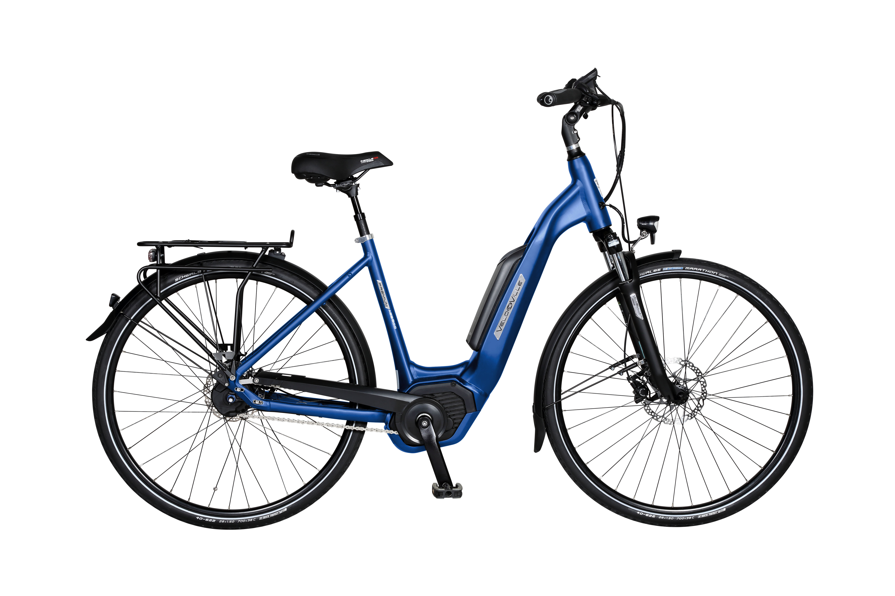

Velo De Ville
Duitse degelijkheid, volledig naar uw hand gezet. Configureer uw droomfiets tot in de kleinste details.
Een fiets die bij u past, niet andersom.
Bij Velo De Ville koopt u geen standaardfiets. Elke fiets wordt in Duitsland op bestelling gebouwd. U kiest zelf het type frame (heren, dames, lage instap), de kleur uit meer dan 30 opties, het type versnellingen, de motor en accu voor e-bikes, en alle verdere componenten.
Vanaf €649 voor een eigen, unieke configuratie.

Hoe werkt het bestellen?
- Ontwerp online: Gebruik de online configurator van Velo De Ville om uw gewenste configuratie samen te stellen.
- Sla uw code op: Sla uw configuratiecode op aan het einde van het proces.
- Kom langs: Neem uw code mee naar onze winkel in de Brugse Poort. We overlopen uw keuzes samen, adviseren waar nodig en meten de ideale maat op.
- Bestelling & Levering: Wij bestellen de fiets en handelen de levering en montage in eigen huis af.
Garantie & Fietsverzekering
Uw investering verdient bescherming. Als officiële verdeler regelen wij alle garantiedossiers en papierwerk rechtstreeks met de Duitse leverancier, mocht er ooit iets zijn. Daarnaast kunt u bij ons direct een Callant Fietsverzekering afsluiten voor uw nieuwe Velo De Ville, zodat u beschermd bent tegen diefstal en schade.